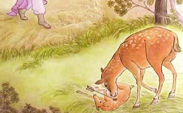

母鹿断肠许真君就是晋朝许逊，字敬之，汝南人。(今河南省汝南县)家住南昌，少年时代，喜武功，善射箭，爱好打猎。有一天到野外，射中一只小鹿，鹿母痛怜爱子，奋不顾身，冲向小鹿，以舌舔伤痕，因箭深伤重，小鹿不救身死，鹿母惨痛徘徊悲鸣，也死在当场。
真君见此情景，非常惊奇，当剖开母鹿腹部时，发现柔肠寸寸断裂，恻隐之心，油然而生，只好就地埋葬。原来母鹿因哀怜儿子惨死，悲伤过度，以至肠断。真君大生悔恨，感悟人畜虽然有别，爱子之心，天性相同，怨艾自己，竟然如此残酷，伤害了天地骨肉之情。于是折断弓箭，从此不现畋猎。后来荐举为孝廉，官旌阳县令，感晋室朝政紊乱，弃官司归隐，追随仙人吴猛受三清法要，入深山潜修，证了仙道。
于是周游江湖以道术为民除害。太康初年飞升成仙。因常显灵迹济世，宋帝追封为神功妙济真君，也简称为许真君，或称许旌阳。
悲猿下泪春秋战国时代，楚国大夫养由基，射箭技能，快速准确，超群绝伦，虽距离百步，任指一片柳叶，可以百发百中。时人称赞他的箭法为“百步穿杨”。
有一次随从楚王到野外打猎，遇见树上有一只老猴，楚王命养由基射杀，养由基张弓要射，猴子望见，惊慌失措，悲泪如雨。
原来这只老猴子手臂柔软敏捷，能接一般飞箭，但是如今面对这位风闻天下的神射手，飞箭所到，手臂再敏捷，也无法应接，可怜老猴，而临死亡，怎不胆落魂飞，悲伤落泪？
成汤解网商朝开国始祖成汤，是位仁德的贤君，为人处事，上体天心，下顺民意。
有一天出游野外，看见猎人四面张布猎网，并向天祷告说：“从天空飞降，从地下出现，或从四方来的禽兽，都投入我的网里。”
成汤见此情景，感叹地说：“猎人这样网罗捕捉，不只手段残酷，而且鸟兽势将绝种，违逆上天好生之德。”因此命除三面猎网，只留一面，改祝祷词说：“愿向左的，快往左逃，愿向右的，快往右逃，愿上飞的，速往上飞，愿不逃的，速向下逃。只有命该绝的，才入我的网中。”
观成汤能以仁德普及禽兽，其伟大的精神，真值得永远歌颂赞美，只因人民积习已久，难以戒除不猎，因此倡导网去三面，尚留其一，祝愿命该绝的。才入网中，以此方便
春秋时代郑国贤大夫，公孙侨，字子产。心地仁厚，
每当有人赠送活鱼给子产，子产从来不忍心，以享口腹，而使活生生的鱼受鼎俎烹割
观察以上事迹，可知爱惜物命，
释迦牟尼佛过去世行
便问菩萨道：“现在你该悔恨了吧？”菩萨回答说：“我无一念悔恨之意。”为了要使秃鹰相信，又继续的说：“如果我的话，真实不假，当令我身上肌肉，生长复原。”
誓愿刚毕，身上肌肉果然当下恢复了原状。于是秃鹰感动佩服，立即回复了天帝身，在空中向菩萨至诚恭敬
隋唐时高僧，天台宗第三代祖师智者大师，讳名智凯，隋炀帝尊称他为智者。大师曾发起佛教徒，乐捐钱财，购买浙江临海一带洼地六十多所，延长起来共有四百多里，开凿放生池，普劝世人戒杀放生，并奏请朝廷，下令立碑，禁止捕鱼，直至唐贞观年间，依然存在。
自后，也有很多明君高僧倡导，唐肃宗乾元二年，下诏天下州县，各立放生池。宋真宗天喜元年也下诏天下广立放生池，杭州西湖，就是宋朝时设立的放生池，现在成了有名的胜地。到了明朝
可惜世代久远，提倡者离世而去，时局变更，善法也败坏了，如今渔火，已如星布，夜半电鱼者，飘飞水面，平时又有钓鱼比赛等残害物命的活动，实在令人悲叹！
寿禅师赎鳞虫得度宋朝永明大师，讳名延寿，莲宗第六代祖师。平生喜欢买物放生，吴越王钱文穆镇守杭州时，大师当余杭县的库吏，常挪用库钱买鱼虾等水族放生。因此犯了“监守自盗”的罪名，依法应处死刑。
吴越王
大师
佛在世时，有一
小沙弥在家度过了八天，就回到师父的身边，比丘觉得很奇怪，于是入定观察究竟。原来沙弥在回家途中，看见蚂蚁穴被水浸入，千万蚂蚁被困水中，将要淹死，沙弥顿发一念慈心，随即脱下
晋朝毛宝尚未成名时，有一次在途中遇见渔夫？带一只大白龟出售，毛宝心生怜悯，将它买来，放生江中。
后来毛宝当大将军，镇守邾城。敌将石季龙率兵数万，大肆围攻，毛宝领兵对战大败，士卒六千人纷纷四散逃跑，部分投江，都被溺死，唯独毛宝披甲投江时，好象觉得堕在一块大石上，水中有物承托着他行走，因此免得溺死。等待到达对岸时，仔细一看，原来承托的，竟是从前所放生的那只大白龟。所谓
宋朝宋郊宋祁兄弟两人，同在太学读书。有一次，遇见一位高僧，能观人相貌，预知吉凶祸福。特为他们兄弟俩相命说：“小宋今科将高中状元，大宋虽登科甲，但名位不高。”
事后，有一次，宋郊到野外，偶见蚂蚁穴，被暴风雨水所浸，无数蚂蚁将被淹死，宋郊心生慈悯，编竹作桥，救渡了无数蚂蚁的生命。
到了科试时，兄弟两人同时参加应考，考毕，尚未放榜，又遇见那位高僧，一见宋郊，大为惊奇地说：“先生相貌已改，必有大阴德，好象曾经救活数百万条生命。”宋郊回答说：“贫儒哪有如此能力？”僧说：“不然，凡是小动物，都有生命。”郊就将救蚂蚁的事实说出。僧说：“这就对了，先生之令弟当中状元，但是先生功名，将不在令弟之下！”放榜点呼名次时，宋郊果然选居第一。当时章献太后认为小弟不可位居兄长之先，于是该祁为第十名，以郊为第一名。这时两人才深信高僧的话，果然应验。
大树仙人护栖怀鸟 古时有一仙人，在深山
孔愉是晋朝山阳人，本是一名小官。有一次，经过余干亭，见一只龟被人所囚，孔愉心生慈悯，将龟买来放生于河中，龟浮游水面，屡次引颈回头，仰望孔愉，表示无限谢意，然后才没入水中不见了。
后来孔愉因讨伐华轶有功，封为余干亭侯。当铸造侯爵官司印时，印上龟纽头部，往后回顾，铸印官司将它融毁，重新铸造，但是融铸了数次，仍旧模型正直，龟纽向后回顾，铸印官司大感奇怪，便将经过情形，报告孔愉。孔愉忽然想起从前放龟，龟屡次回头顾望，这才恍然明白，如今得以封侯，定是放龟功德的善报，于是保留这颗回顾侯印，佩带使用。
孙真人救龙子传方孙真人是历史上大名医孙思邈，唐朝京兆华原人，七岁就学，便能日诵千余字，弱冠善谈庄老及百家学说兼好释典。精于阴阳推步医药之学。后来隐居太白山修道家功夫，练气养神，专精探究医药，以济世活人为心。
当他尚未成就仙道时，有一次外出遇见村童，捕捉一蛇，殴打戏弄，蛇身出血将死。孙真人怜悯蛇无辜遭受伤害，便向村童买回，用药敷治救活，然后放生于草泽中。经过月余，孙真人在静坐间，见一位青衣少年前来邀请，真人跟随，到了世人称羡的水晶宫，见头戴合帽，身穿绛衣的龙王出来迎接，延请上座并说：“小儿前日出游，被人所伤，幸遇道人拯救，不胜感激。”即召青衣小官出来，再三拜谢，并殷勤设宴款待，留住三天，临行拿出奇珍异宝赠送，以表谢意。
真人坚持不受说道：“久闻龙宫甚多医病秘方，愿能传我，以救世人，远胜金玉。”龙王为感激救子之情，便赠送玉笈三十六方。命仆护送真人到家。经过屡次试验均有灵效，于是编入千金方中传世，从此医术更加精通，行医救人无算。后来证了仙品，活到一百二十岁，到了唐高宗永徽三年二月十五日早上起床，沐浴更衣，遗下形体，仙化而去。经过月余，形体颜貌不变，举尸入棺，轻如空衣，时人都惊奇赞叹！世称为孙真人
师纵鲤增寿屈师在元屯地方，遇见淦翁捕捉一条赤色鲤鱼，鱼望见屈师，跳踯挣扎，似有求救之意，屈师心中不忍，便将它买来放入河中，让它优游而去。
后来梦见龙王邀请他到龙宫中，对他说：“先生本来
汉姬姓诸侯隋侯，有一次出使齐国，途中见一蛇，被困在热沙滩上打滚，头部受伤流血，隋侯怜悯，急忙以物用药敷治，然后用手杖挑入水边让它恢复体力后游去。
后来隋侯从齐国回来，又道经此地时，见该蛇口衔一颗宝珠，等候赠送隋侯，以报救命之恩，隋侯心中明白，但是不敢接受。
当晚，梦见脚踏一蛇，惊醒一看，却发现床头一对明月宝珠，直径一寸，纯白色，夜里发光，可以照耀全室，世称为隋侯宝珠。
拯溺蝇酒匠免刑有一酒匠，每见苍蝇投入酒瓮中，随即将蝇捞起，放在干处，用灰剂小心吸去体上水分，救活苍蝇。如此日久天长，所救的苍蝇，不可计数。
有一次，酒匠被盗贼牵连诬告，无法自白，牢狱罪名，将要成立，主审官司握笔要写判决书时，许多苍蝇飞来聚集笔端，随手挥去，又来聚集，因此无法下笔判决。审判官司怀疑其中必有冤情，详细审问，仔细推敲，才知是被诬告的。押出盗贼，严加审讯，果然承认，于时冤情大白，获得释放。像苍蝇报恩之事，所闻甚少，佛说：“蛹飞蠕动，皆有灵性，”因果相报，也就不足为怪了。
舍巨鳖厨婢愈疾程氏夫妇平素喜吃鳖肉。有一次偶然买回一只大鳖，吩咐厨婢宰割烹煮，当时夫妇有事暂时外出。厨婢心想：“由我亲手宰杀的鳖命，已经不可计数。今日我决定要释放这只大鳖，甘愿挨受鞭打，不忍心再宰杀了。”于是偷偷地将鳖放生于池中。
主人回来索取鳖肉，厨婢禀告说：“刚才不留意，竟被它走失了。”主人非常愤怒，执起鞭子狠狠地毒打厨婢，直到气消才罢休，可怜厨婢，遍体鳞伤，始终忍痛不说。
后来有一次，厨婢感染瘟疫，发高烧，病得奄奄一息，主人怕她死在屋里，把她抬到池中水阁里，等待命终。
当晚，忽然有一动物从池中爬出，身上负有湿泥，在厨婢身上涂敷，使她顿觉凉爽，高烧因而解退，于是疾病痊愈，得以更生。主人惊奇她病得如此沉重，没有吃药，怎能好转，厨婢便将事实经过相告。主人不信，到了晚上，隐藏暗处偷看，果然是从前失踪的那只大鳖来救她。全家惊奇感叹，从此永远不吃鳖肉了。
赎物命魂超天界从前有一位张提刑，天性仁慈，到屠宰市场，遇见被宰杀的动物，捆缚在地，惊慌恐怖，哀声鸣叫。张提刑心中不忍，不惜钱财，全部买回，放生于林野。平素只要有了钱，就往屠宰场去，日久天长，所救物命，不可计数。
后来张提刑临命终时，自知时至，告诉家人说：“我一生慈心救护物命，积德累功，至深且厚，如今天宫人来迎，我就要超生天界了。”说罢，无病安详善终。
放水族毒解丹砂李景文天性爱护动物，每次外出游山玩水，遇见渔夫捕获水族，一定不惜金钱，全部买来，仍然放入江中，让它们悠游而去。
景文平素爱好服食养生补品，常服用火烧炼的丹砂，积久热气上攻，变成疾病，背上长出痈疮，延请名医诊治，服用种种汤药，都无功效，病情非常沉重。
有一天，在昏迷睡梦中，好像有成群的鱼类，用津液浸湿他的疮毒，使他顿感清凉愉快，次日，痈疮渐渐消肿，疾病因而得以痊愈。这正和白鳖报答厨婢的事迹相同。
禽鸟助葬孙良嗣是一位心地仁厚的乡民，虽然家境不好，但是每见禽鸟被人捕获，囚在鸟笼子里，便设法凑钱买来放生，每当打开笼子，眼见禽鸟吱吱飞翔空中，重获自由，心中就感到万分舒畅与快乐。
后来孙良嗣命终后，尸体迁在郊外山上要埋葬，因家贫无法筹办埋葬费，忽然飞来数千万只鸟，口衔泥土，重重堆积在孙良嗣身上，不到一天，就成就了一堆黄土，邻里乡人见此情状，都非常惊奇感叹。大家都认为这是因为孙良嗣买鸟放生的慈心，感动禽鸟报答所致。
六祖守网放兔 唐朝
后来时节因缘成熟，六祖便到广东省曲江县东南，建立曹溪道场，大兴
宋朝时，诸暨县令潘华，是虔诚佛教徒，修习普贤忏法，仰体上天好生之德，万物和乐之心，严禁地方百姓，不可入江湖捕网鱼类，若有违儿犯令者，一律加以罪刑。因此在潘县令在任期间，江湖水族，得以无惊无忧，自由
后来潘县令奉旨，将入朝为官，夜梦江河中数万鱼类，哀号哭泣，说道：“长者要离开本地，我辈不免要遭受烹杀了，”说罢哭声直上天空。潘县令醒来深觉奇异，便作梦鱼记，叮嘱后来接任的县信，也能保护水族。
当潘县令临行时，江湖水中，忽然发出一阵很大悲号的声音，好像失却了保障，如同丧失父母一般痛切，附近百姓皆亲耳听到，大家无不惊奇感叹。
师去牲祷神有一次，正值旱灾荒年，五谷不生，人民面临饥荒，惶恐不安，纷纷议论要宰杀牲畜，祭天降雨。
信大师见人民如此愚痴的作法，深生怜悯，于是对众人说：“杀害牲畜，祈求降雨，是悖逆天理残暴的愚昧行为，上天有好生之德，你们如此作法，不但求不得雨，反而造罪，会招来灾殃。你们若能释放牲畜不杀，我自当为大家祈雨”。人民听了，觉得很有道理，都愿照大师的话，释放牲畜，不
于是，大师便摆设香坛，精诚祈祷，甘雨果然立刻下降，人民兴高采烈，远近居民，多受感化。
雀受衔环之报汉朝杨宝，天性仁慈，年纪才九岁时，有一次在华阴山北，看见一只黄雀被鸱鴞追逐搏伤，坠落地上。又被许多蚂蚁困咬伤口，黄雀痛苦挣扎，杨宝深为怜悯，便把它救回，敷治创伤，小心畜养在竹箱里，又用黄花喂它，等到创伤痊愈，羽毛生长后，就放它飞去。
当夜梦见黄衣童子，向杨宝再三拜谢说道：“我是西王母使者，在飞往蓬莱仙山途中，遭受伤害，承蒙拯救疗养恩德如今我要返回南海了。”说罢，便以白玉环四枚赠送杨宝。继续地说：“祝愿你子孙洁白，位登三公，就如同这玉环一样。”
后来杨宝子孙，杨震、杨秉、杨赐、杨彪四代，果然都位列三公，清风亮节，贵显无比。
放狐脱陷井之灾 从前有一僧人，向来不务
于是自己告别众人，带着黄精入井，吩咐人家，加盖磨盘，不料过了半个月，打开一看，僧人已经饿死在井内。真是可悲可叹！原来僧人不知前人脱离陷井灾难，乃是狐狸为报旧恩特来相救的，这不但说明了因果相报的事实，也正说明了不落实修持的后果。
蜈蚣听经明朝穆宗隆庆四年，莲池大师行脚止宿一寺，见人擒捉数条蜈蚣，用竹弓系住头尾，大师怜悯买来放生，但多数已经半死了，只有一条全活，急速逃生而去。
后来有一夜，大师正和一位朋友坐谈，壁上忽然出现一条蜈蚣，用木尺从旁边用力敲振，想驱逐它走，竟然不去。大师说：“难道以前所放生的就是你吗？你是为谢恩而来的吗？假若是的话，我当为你
明神宗万历九年，杭州湖墅居民于氏的邻居，遭遇盗贼抢劫，于氏有出嫁的女儿，听到消息，特地回娘家为母亲问安，顺便送来十尾鳝鱼作礼物，于氏将鳝鱼畜养在水瓮中，却忘记了。
有一夜，于氏梦见十个穿黄衣戴尖帽的人，长跪在她面前，苦苦哀求救命。醒来心中疑怪交集，不能消释，便到算卦家去卜吉凶，术士告诉她说：“家中当有生灵求你放生。”于氏回家遍找室内，发现水瓮中有鳝鱼，数数正是十尾，大为惊奇，心想：“鳝鱼为了求生，竟能现黄衣人而入我梦境，可见鱼类也有灵性。”于是立刻将鳝鱼带往河里放生。
饷即瘗(yi)之戒牛录上记载：宣城庚本淑的祖父辈，都遵守不吃牛肉，已经很久了。
有一次，庚本淑生病，服用医师开的药方，用牛脑作引子。又曾经有人赠送牛肉，庚本淑自己虽然不吃，却给仆人吃，自以为这样就没有罪过。
有一天，庚本淑梦见头戴冠帽，身穿赤色朝服的神，呵斥他说：“你是吃牛肉的人吗？身体竟如此腥臭难闻？”庚要淑回答说：“我并没有吃牛肉。”神既命随从官司吏检阅
庚本淑醒来就将梦中所见经过记载下来，流传劝化世人，戒吃牛肉。
断舌累子法苑珠林上记载：唐高祖武德年间，隰州大宁地方，有农夫贺永兴，有一次，邻家的牛，侵犯了他田里的农作物，贺永兴在盛怒之下，竟用绳系紧牛舌，猛力将舌拉断，可怜的牛，满口鲜血淋漓，惨痛难言。邻里乡人纷来围观，见此情状，都指责贺永兴的手段太残酷了。
后来贺永兴生了三个儿子，都不能说话，成了哑吧。大家都认为这是贺永兴心地残忍，招来的现实
钱梅溪先生爱好
有一次他说：江苏常熟县黄草堂的地方须某，以宰牛为职业，每次杀牛，必先将牛舌，活活割下，牛惨痛哀呜，须某无动于衷，牛宰完了，就将牛舌带回家中，烹煮食啖，以为这样味道特别鲜美。
有一天，须某把屠刀安放在房门上面，忽然听到两只老鼠在门上，激烈打闹，须某仰面探看，不料门上屠刀被震动，突然掉落下来，正堕入须某口中割断舌头，当场死亡。
呜呼！须某平忍心以刀活割牛舌，不料自己也被牛刀断舌惨死。
十一世牛因果实录上记载：河南省归德地方的医师尹某，好吃牛肉，每到病人家中诊病，请他吃饭时，若见桌上没有牛肉，便以为不够诚意，就会抱怨不吃而去。
有一天突然死去，神识到了冥罕，遇见同里杀牛屠夫，跪在堂下，正接受阎罗王的审问。屠夫见医师尹某来到，便指着说：“他不吃，我不杀。”尹某跪在地上，对答说：“他不杀，我不吃”双方为了卸责，争辩不止。
阎罗王听了，大怒说：“牛竭力劳苦，代人耕田，养活人命，你们不但不知
此段事迹，是湖北省孝感县杜嗣麟先生，神识入冥间所见，还阳后述说。事情发生在清仁宗喜庆末年。
魂受牛苦 陈半痴先生述说：清道光二十年，江西德兴县婺原地方某人，有一次跟随众人
回到家中，家人斋请僧人，设坛立戒，发誓永不吃牛肉，并许愿每年七月三十日地藏王菩萨圣诞日，虔诚朝拜九华山。
经过十天后，神智才渐渐恢复，突然惊慌恐惧地站起来说：“苦死我了，我亲身犁田已有十多天了。”原来
四乡笔记上记载：清道光初年，五都地方叶某，以宰牛为业，平生杀牛无算。
有一天，突然暴病而死，次日又苏醒过来，臀部皮肉呈现青肿，大声呼叫疼痛。忽然起床，跛脚颠仆不稳，走出门去，妻女劝止不听。
叶某走到村中市场，便向人喋喋不休地说：“阎王命我来苦劝世人，千万不要像我一样，作恶多端，冥府刑罚严酷，不比阳世……”话未说完，便呜咽落泪。这样沿门择优户，劝告完毕，便破着脚，慢慢走回家。
女儿在门外等候，远远望见父亲，惊奇地呼唤母亲说：“爹回来了！怎么变成人身牛头呢？”母亲诃斥她不要胡说，走出观看，叶某已回到门口，仍然变回人头，一声不响地入门上床躺下，不久就气绝死了。这就是杀牛的现实报应。
雷火烧身四乡笔记上记载：桃溪地方某人，时常宰杀耕牛。清宣宗道光元年四月十日正午时分，在他住宅一带，忽然乌云蔽空，倾盆大雨，雷电交作，霹雳一声，一道流光触中此人，当时面部焦黑，身上皮肉卷起，惨痛呼号，几将昏绝。
经过数天，神智糊涂，电火灼伤处，皮肉腐烂生虫，痛痒难忍，自己用手抓取送入口中啖食，大声叫道：“牛肉好吃吗？”边吃边叫，直到身肉抓尽，声音嘶哑，如此折磨数月才死。
世上最厉害的果报是杀生今早有个越南人带了两个小孩来见我，说身体不好，找我帮忙令他一切事情顺利如意吉祥。这两个小孩子神经都不正常，我一看之下，就问他有没有杀生。他们的母亲说她没有杀生，结果讲来讲去便说他们门前有一棵大树，把大树砍了，就见到了二条蛇钻到树底下窟窿内去。当时他们用热开水把这两条蛇烫死，之后他的儿子就把自己关到房里，几天后出来就发神经病了。
第一个儿子是这样，第二个儿子又是这样，两个都发神经病。他们希望我能把这事解除。这是因为杀生的关系，你看他们这么残忍！心里那么毒辣，一点慈悲心都没有，见到蛇钻到洞内，还要用开水把它烫死。这两条蛇是两兄弟，两条蛇烫死了，两兄弟也发神经病了。所以世界上最大的业力就是杀生，杀生的业报比什么报都重，互相杀，互相报复，这是世界最悲惨的一件事！
杀生的业报就是互相报复，造成国与国的战争，来互相报仇，互相造杀业，所以杀业越造越深，越造越重，就互相杀杀不已。
我在洛杉矶见到一个小孩，大约六、七岁，这个小孩子不能讲话，也不能做什么事情，父亲要常常抱着他，这是因为他前生打猎打得太多了，把一只白老鼠精打死了，所以今生他托生做人时，这老鼠精就天天啃他喉咙，令他不会讲话，不懂人事，受这种果报。这是洛杉矶现在的事情。
在香港有一位姓谢的人，他妈妈喜欢吃虾、龙虾、螃蟹，所以她生了一个儿子，横行，和螃蟹差不多，现在已十多岁了。这都是现世现报，很清楚地说明杀生的果报。
还有，我在马来西亚看见一个哑吧，前生是只黑熊。他很聪明，也
这些事实都是现身说法，可是人还不相信，尽造杀业，还不知戒杀放生，不犯
我在香港曾遇到一件事情，那时我在志莲精舍讲《
因果报应是丝毫不爽的，我们切记不要杀生，你杀他，他就杀你，互相残杀，没有完了！以上是现世现报，人人都能看得见的。我们不要看见还不相信因果报应，你不相信因果报应，就轮到自己头上，想逃避也逃避不了。
现在最要紧的是世上还有不知多少小鬼在报复，为什么有这么多小鬼呢？就因为人
我们都知道一切众生皆有